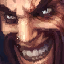

Draven
the Glorious Executioner

Class :
Marksman
Lore :
In Noxus, warriors known as Reckoners face one another in arenas where blood is spilled and strength tested—but none has ever been as celebrated as Draven. A former soldier, he found that the crowds uniquely appreciated his flair for the dramatic, and his unparalleled skill with his spinning axes. Addicted to the spectacle of his own brash perfection, Draven has sworn to defeat whomever he must to ensure that his name is chanted throughout the empire forever more.
Stats :
| Health | Health per level | Mana | Mana per level | Movement speed | Armor | Armor per level | MR | MR per level | Range | HP regen | HP regen per level | Mana regen | Mana regen per level | Crit | Crit per level | AD | AD per level | AS per level | AS |
|---|---|---|---|---|---|---|---|---|---|---|---|---|---|---|---|---|---|---|---|
| 605 | 90 | 360.56 | 39 | 330 | 29 | 3.3 | 30 | 0.5 | 550 | 3.75 | 0.7 | 8.04 | 0.65 | 0 | 0 | 60 | 3.61 | 2.7 | 0.679 |

Passive : League of Draven
Draven gains his fans' Adoration when he catches a Spinning Axe or kills a minion, monster, or tower. Killing enemy champions grants Draven bonus gold based on how much Adoration he has.